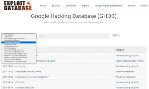

Data publicării: 29.09.2017
Autor articol: Sabin Buraga
Introducere
Lucrarea de față realizează o prezentare succintă a câtorva maniere de detectare a diverselor vulnerabilități comune ale aplicațiilor Web prin folosirea interfeței unui motor de căutare a resurselor Web. Despre vulnerabilități și riscuri de securitate am discutat într-un articol anterior.
Arhitectura internă a unui motor de căutare Web este descrisă în lucrări precum (Buraga, 2005), (Buraga, 2016), (Chakrabarti, 2003) și discutată, de asemenea, în cadrul cursului Dezvoltarea aplicațiilor Web la nivel de client propus și susținut de autor începând cu anul 2010 la Facultatea de Informatică a Universității “Alexandru Ioan Cuza” din Iași. Următoarea secțiune punctează cele mai importante aspecte vizând această problematică. Ultima parte a articolului se focalizează asupra manierei de utilizare a motoarelor de căutare pentru descoperirea facilă a unor vulnerabilități Web.
Ce rol are un motor de căutare a resurselor Web?
Scopul unui motor de căutare pe Web (Web search engine) este acela de a localiza resursele existente în cadrul spațiului World Wide Web:
- Conținut textual – documente Web, știri, comentarii, cod-sursă, însemnări în cadrul aplicațiilor Web sociale, recenzii de produse/servicii oferite prin comerț electronic etc.
- Conținut multimedia – imagini (fotografii, diagrame, ilustrații), audio, video, prezentări și altele, disponibile în formă fizică și/sau electronică, în regim comercial sau gratuit.
- Entități – persoane, organizații, evenimente, cunoaștere (cărți, software), de interes personal/social (bunuri reale/digitale – produse și/sau servicii) etc.
Un motor de căutare trebuie să satisfacă nevoia de informații (cunoștințe) a utilizatorului.
Tipurile de căutări pe care utilizatorii (umani sau nu) le pot efectua pot fi aliniate manierei tradiționale, bazată pe indecși de termeni, ce ia în considerație explorarea structurii hipermedia a Web-ului (crawling), plus prelucrarea conținutului textual (indexing). Primele abordări de acest gen au fost Lycos (demarat în 1994 ca proiect de cercetare la Carnegie Melon University) și AltaVista (oferit public începănd cu 1995 de Digital Equipment Corporation).
O alternativă este cea care recurge la ierarhii de termeni (cuvinte), adică disponibilitatea unor servicii de căutare de tip catalog – i.e. topic directory – ce beneficiază de suportul dat de diverse taxonomii generice ori particulare. Exemplul notoriu îl reprezintă Yahoo! (Yet Another Hierarchical Officious Oracle) fondat în 1994 de doi absolvenți Stanford.
Desigur, pot exista abordări hibride – indecși + taxonomii de termeni, ceea ce conduce la exploatarea unui portal Web punând la dispoziție în mod unitar un volum de informații cu caracter general sau specific unui subiect de interes. Ca exemplificare poate fi menționat Excite – inițial, denumit Architext și creat în anul 1994 de un grup de studenți ai universității Stanford.
Una dintre tehnicile revoluționare a fost cea bazată pe analiza structurii legăturilor hipertext/hipermedia (hyperlink analysis) pe care a propus-o Google, o inițiativă demarată în 1996 de doi doctoranzi la Stanford sub denumirea BackRub și disponibilă public din anul 1998.
Caracteristicile unui motor de căutare ideal sunt sintetizate de următoarea listă (Buraga, 2016):
- Scop – căutarea oricărei resurse existente;
- Viteză – rezultatele trebuie să fie disponibile imediat;
- Disponibilitate – orice modificare trebuie să fie indexată “instantaneu” (în timp-real);
- “Reamintire” (recall) – găsirea tuturor resurselor relevante pentru o cerere dată;
- Precizie – răspunsul oferit conține doar resurse relevante;
- Categorisire eficientă (ranking) – cele mai relevante resurse Web sunt plasate primele.
Există trei componente esențiale pe care un motor de căutare trebuie să le implementeze (Chakrabarti, 2003):
- Robot Web (spider, crawler, Web bot) – program ce traversează în manieră automată (posibil, autonomă) un “areal” al Web-ului, cu scopul de a extrage date; astfel, pornind de la o adresă Web, se realizează o conexiune HTTP la un server Web, pentru a întreprinde anumite acțiuni (extragere de date, copiere, agregare de conținut, monitorizare, realizare a unui rezumat etc.) vizând reprezentarea unei resurse – uzual, HTML – și, recursiv, din toate resursele (documentele) desemnate de legăturile existente în cadrul reprezentării.
- Index (catalog) – stochează, în mod persistent, (meta-)date despre resursele existente pe Web pe care robotul le-a colectat; maniera de stocare se bazează pe sisteme de baze de date distribuite, actualmente disponibile în “nori”, optimizate în ceea ce privește regăsirea informațiilor de interes (date propriu-zis + meta-date asociate); contextul mai larg privește procesarea volumelor mari de date (big data), luându-se în calcul aspecte precum relevanța, contextul de apariție, procesarea limbajului natural, clasificarea (semi-)automată via învățare automată (machine learning) sau alte tehnici etc. (Fishkin, 2017). De asemenea, se adoptă strategii de indexare semantică, recurgând la concepte, prin intermediul clasificării sociale via adnotare de resurse (folksonomy) și folosirea tehnologiilor Web-ului semantic.
- Mecanism de evaluare – pe baza cererii formulate de utilizator, se oferă anumite răspunsuri – de dorit, utile; pentru a satisface acest scop, se recurge la o interfață de interogare ce acceptă diverși operatori specifici – e.g., related:, cache:, link:, intitle:, site:, define: etc. disponibili pentru Google (detalii în Buraga, 2005). Suplimentar, interacțiunea cu motorul de interogare poate fi facilitată de un agent software conversațional, util mai ales în contextul dispozitivelor mobile – exemple: Apple Siri, Google Now, Microsoft Cortana, Dragon Go, Sherpa, SpeakToIt Assistant. Evaluarea relevanței se bazează în principal pe clasificare umană, informații vizând utilizarea unei resurse (e.g., periodicitatea accesului, frecvența actualizării conținutului, importanța relativă,…), conectivitatea cu alte resurse (analiza relațiilor cu alte pagini, plus reputația – i.e. importanța domeniului Internet).
Spațiul alocat acestui articol nu poate permite alte amănunte, însă cititorii interesați au la dispoziție resursele bibliografice.
Utilizarea motorului de căutare pentru detecția de vulnerabilități informatice
Un posibil atacator poate exploata configuraţiile incorecte sau implicite ale serverelor sau aplicaţiilor Web doar recurgând la un motor de căutare pentru a detecta posibile vulnerabilităţi – uzual, breșe ce pot divulga informații cu caracter sensibil (information disclosure). De exemplu, pentru a avea acces la lista fişierelor dintr-un director, se va formula interogarea intitle:index.of “parent directory”. La fel, printr-o construcţie de genul “Apache/2.4.28 server at” intitle:index.of se pot detecta versiunile unor servere Web prezentând bug-uri cunoscute care, cu puţin noroc, nu au fost încă remediate.
O configurare eronată a serverului Web poate oferi accesul la fişierele .bak create în urma editării, astfel încât se poate vizualiza codul-sursă al unui script care se execută pe server (de exemplu, un program JavaScript, PHP ori Ruby). Acest program poate conţine informaţii privitoare la parolele de acces la baza de date ori la structura tabelelor bazei de date folosite de aplicaţie. Atacatorul nu trebuie decât să recurgă la inurl: index.php.bak.
Un atacator poate să recurgă oricând la un motor de căutarepentru a detecta posibile vulnerabilități ale aplicațiilor Web.
Printre acțiunile mai „sofisticate” desfăşurate de un cracker – descrise pe larg în lucrări precum (Buraga, 2005), (Long, 2008) și (Brown et al., 2013) –, putem enumera următoarele:
- Tentativa accesării sitului de intranet al unei organizaţii, unul dintre departamentele de interes putând fi cel al resurselor umane: intitle:intranet inurl:intranet +intext:”human resources”
- „vânarea” de adrese de poştă electronică (ţinte pentru spam ori folosite în alte scopuri precum social engineering): “@gmail.com” -www.gmail.com sau filetype:pst pst (inbox | contacts | address)sau “e-mail” intitle:”curriculum vitae”
- căutarea unor aplicaţii instalate pe diverse maşini (firewall-uri, programe de verificat conectivitatea la Internet, aplicaţii privind topologia reţelelor ori traficul de date într-o reţea etc.) sau a rapoartelor generate de acestea: inurl:error.log filetype:log -cvs ori filetype:vsd vsd -samples -examples
- localizarea unor programe de exploatare a vulnerabilităţilor (exploit-urilor)
- localizarea siturilor care se bazează pe aplicaţii cunoscute ca fiind vulnerabile
- detectarea paginilor de administrare a unei aplicații Web: “admin login” sau intitle:”Tomcat Server Administration” sau intitle:”ITS System Information” “log on to the SAP System”
- găsirea unor instalări implicite ale serverului Web – un exemplu fiind intitle:”welcome to” intitle:internet IIS
- căutarea fişierelor temporare (care ar putea conţine informaţii preţioase) existente pe un server Web: site:domeniu inurl:temp | inurl:tmp | inurl:bak
- căutarea unor mesaje de eroare generate de aplicaţii (ASP.NET, PHP şi altele) în vederea obţinerii de informaţii privitoare la configuraţii, structuri de directoare, nume de utilizatori etc.: intext:”Warning: Failed opening” include_path ori “ASP.NET_SessionId” “data source=”
- localizarea unor dispozitive cu conectivitatea la rețea (camere Web, copiatoare, imprimante)
- căutarea de parole (desigur, parolele descoperite vor fi uzual criptate, însă un atacator răbdător le poate sparge, chiar şi prin forţă brută, apelând la programe specializate): inurl:/db/main.mdb sau filetype:htpasswd htpasswd
- localizarea interfeţelor către sistemele de baze de date: intitle:”oracle http server index” “Copyright * Oracle” ori inurl:main.php phpMyAdmin
- descoperirea unor mesaje de eroare periculoase raportate de serverele de baze de date (aceste informaţii pot ajuta atacatorul să realizeze injectări de cod SQL) – un exemplu tipic: “supplied argument is not a valid MySQL result resource”
O colecție actualizată de astfel de operațiuni posibil malițioase este disponibilă online pe situl Exploit DB după cum se poate remarca în figura de mai jos.

De amintit și faptul că o altă sursă de informații ce pot fi folosite în manieră necorespunzătoare de către un atacator o reprezintă fișierul robots.txt specificând zonele dintr-un sit pe care un robot Web nu trebuie să le indexeze – diverse studii de caz reale sunt prezentate de (Thiébaud, 2015).
Referințe bibliografice
- Brown, F. et al., “Google Hacking. Using Google to Find Vulnerabilities in Your IT Environment”, InfoSec World, 2013: http://www.bishopfox.com/resources/tools/google-hacking-diggity/presentation-slides/
- Buraga, S., Proiectarea siturilor Web (Ediția a doua), Polirom, 2005.
- Buraga, S., Căutarea resurselor Web, Facultatea de Informatică, UAIC Iași, România, 2016: http://www.slideshare.net/busaco/sabin-buraga-cutarea-resurselor-web
- Chakrabarti, S., Mining the Web. Discovering Knowledge from Hypertext Data, Morgan Kaufmann, 2003.
- Fishkin, R., The Search Landscape in 2017, Moz, 2017: http://www.slideshare.net/randfish/the-search-landscape-in-2017
- Long, J., Google Hacking for Penetration Testing (Volume 2), Elsevier, 2008.
- * * *, Awesome Penetration Testing, 2017: http://github.com/enaqx/awesome-pentest
- * * *, Google Hacking Database @ Exploit DB, 2017: http://www.exploit-db.com/google-hacking-database/
- * * *, What one may find in robots.txt, 2015: http://thiébaud.fr/robots.txt.html